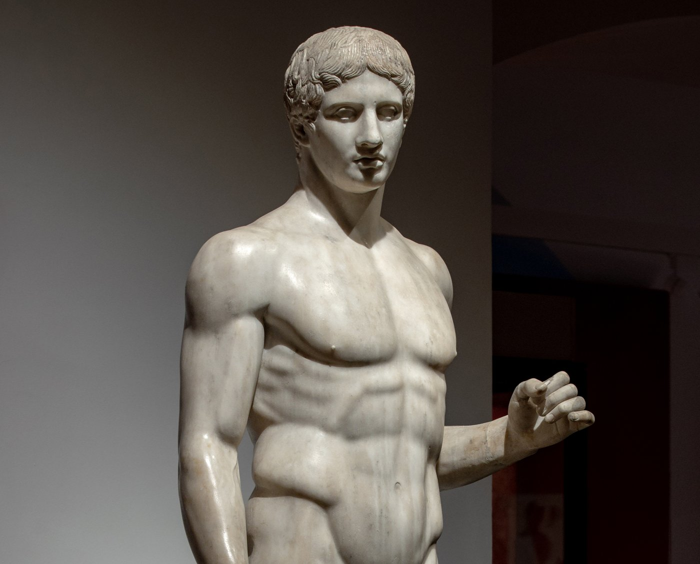
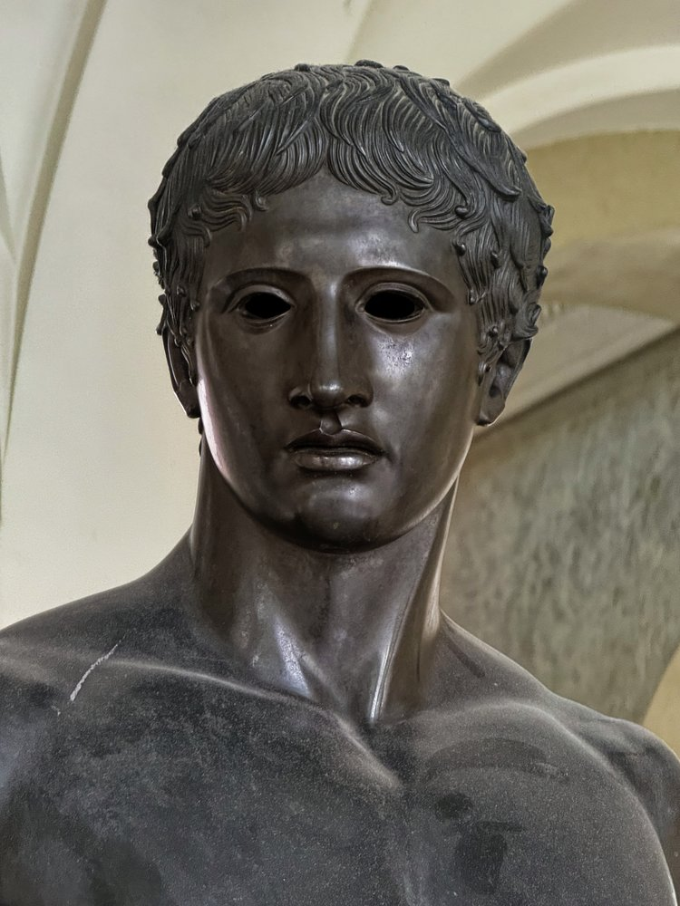

Polykleitos · original circa 450–440 B.C.E. · Roman marble copy
Look closely at the balanced pose
Magnifier

Polykleitos, Doryphoros (Spear Bearer), Roman marble copy of a lost Greek bronze original of about 450–440 B.C.E. National Archaeological Museum, Naples. Shown waist-up to focus on the face, shoulders, and raised spear arm.
Detail · bronze head

Bronze head of the Doryphoros, Pompeii: a different Roman copy made in bronze, closer to the look of Polykleitos’s lost original. The empty eye sockets once held inlaid eyes of colored stone or glass.
Polykleitos carved the Doryphoros, the Spear Bearer, in bronze around 450–440 B.C.E., in the middle of the Classical period. As with Myron’s Discobolus, the original is lost. What survives is a Roman marble copy.
The pose is called contrapposto, the Italian word Renaissance sculptors used a thousand years later for what Polykleitos invented here. The figure’s weight rests on the straight right leg; the left leg bends and relaxes behind. The hips tilt, with the weight-bearing right hip higher, and the opposite shoulder swings up to balance them. The head tilts down and slightly to the figure’s right. The body makes a gentle S from heel to head.
With this single pose, Polykleitos ended the stiff frontality of the kouros. He gave the human figure the look of a body at rest in its own weight.
Words to know
Contrapposto (kon-truh-POS-toh)
A standing pose in which a figure rests its weight on one leg while the other relaxes. The hips tilt toward the weight-bearing side; the shoulders tilt the other way. The body makes a gentle S-curve. Polykleitos invented it, and Renaissance sculptors revived it a thousand years later.
Canon (KAN-un)
Polykleitos’s set of mathematical proportions for the ideal human body, laid out in a lost book he titled The Canon. The Doryphoros was his demonstration piece: a figure carved to his own rules.
Idealization
The practice of carving not a specific person but a perfected version of the human form. Polykleitos’s athlete is not a portrait; he is an ideal.
What to notice
Below this crop, the figure’s weight rests entirely on the straight right leg; the left leg bends at the knee and relaxes behind, with the heel lifted. This weight shift is the whole discovery.
The hips tilt toward the weight-bearing right side: right hip higher, left hip lower. To balance them, the shoulders tilt the opposite way: left shoulder up, right shoulder down.
The head tilts down and slightly to the figure’s right, repeating the angle of the opposite shoulder. The body makes a gentle S from heel to head.
The right arm hangs relaxed at the side. The left arm is raised and bent at the elbow, with the fist closed: it once held a long spear that rested on the shoulder.
The muscles are drawn to Polykleitos’s Canon of proportions: broad shoulders, V-tapering torso, deep abdominal panels, and equal weight given to each part of the body.
In the detail image, the bronze head from Pompeii shows the idealized face closer to what Polykleitos’s lost original looked like. The empty eye sockets once held inlaid eyes of colored stone or glass.
Why this matters later
Contrapposto—the weight-shifted pose shown here—becomes the standard standing pose of Western sculpture for the next two thousand years. In the Renaissance deck, you will meet Donatello’s David, the first nude figure in contrapposto since antiquity, and Michelangelo’s David, where the pose becomes heroic. Every classical revival since the Renaissance returns to the Doryphoros.
Image credits. Main: Polykleitos, Doryphoros, Roman marble copy of a lost fifth-century B.C.E. Greek bronze original, Museo Archeologico Nazionale, Naples. Detail: Bronze head of the Doryphoros, Pompeii, a separate Roman bronze copy of the same lost original. Images from the linked source card.